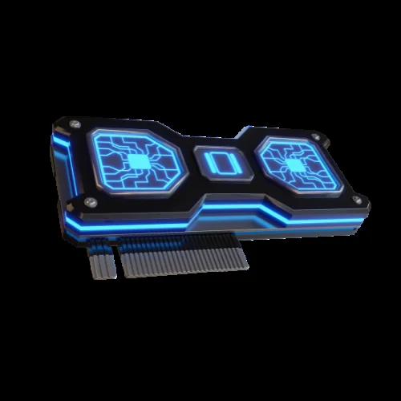

Abdelkareem Elkhateb
Arabic NLP Researcher & AI Engineer
Advancing Arabic Natural Language Processing through efficient model design, edge-deployable transformers, and production AI systems for 500M+ speakers.
📞 +20 101 364 6887 ✉️ kareem01095134688@gmail.com
Research Focus
Arabic NLP Research & Efficient Deep Learning — building smaller, faster models for resource-constrained devices.
Full-stack AI: training Arabic embeddings & sparse autoencoders, deploying CPU-optimized transformers, building production RAG systems.
Pursuing a Master’s in CPU-Efficient Transformer Optimizations for Arabic.
Experience
AI Medical Engineer
Full-Time
AI-powered medical engineering solutions using Python, Medical AI, and Deep Learning.
AI Engineer
Full-Time
- Built end-to-end real estate AI platform: semantic search, RAG assistant, multi-agent workflows
- Vector search over 500 projects (13K units, 160 developers); relevancy 30% → 92%
- AI agent factory: generates customized agents with dynamic workflows in under 2 minutes
- Reduced broker workflow time from 90s to 15s (83% improvement)
NLP Engineer — Arabic NLP
Part-Time
Contributed to state-of-the-art Arabic NLP models (LLMs, embeddings, OCR, ASR). Maintainer in NAMMA open-source community advancing Arabic Natural Language Processing.
Machine Learning Engineer
Full-Time
Developed ATS system using NLP and LLMs to improve CV-job matching.
Education
B.S. in Computer Science
Sep 2020 – Jun 2024
GPA: 3.54/4
- Graduation Project: AI-Powered Childcare Application (infant cry analysis)
- Pursuing Master’s: CPU-Efficient Transformer Optimizations for Arabic NLP
Research in Arabic NLP
Arabic Embedding Models
BertHash-Femto
113× smaller than AraBERTv2, 94% accuracy. An Arabic transformer that runs on edge devices. Efficiency research in Arabic NLP model compression.
Zarra & Bojji
Tiny Arabic language models optimized for mobile and edge deployment. Part of ongoing Arabic NLP efficiency research.
Vision Language Models for Arabic
Arabic ColPali
Vision-language model for Arabic document retrieval using ColPali architecture.
Speech and Audio
Ara-Nemotron 3.5 ASR
Streaming Arabic speech recognition for real-time transcription. Supports multiple Arabic dialects.
Arabic TTS
Building a from-scratch Arabic text-to-speech model targeting all major dialects. In progress.
Agentic and Tool Use
Gemma3 Arabic Tool Calling
Fine-tuned Gemma 3 for Arabic function calling. A no-RAG approach that teaches the model to call tools directly in Arabic.
Tools & Platforms

Featured Writing on Arabic NLP & AI
Fine-Tuning Gemma 3 for Arabic Tool Calling
A no-RAG approach to teach Gemma 3 to call tools in Arabic — extracting keywords, delegating to grep, and building training data with MIRACL.

HyperRun + ColGrep: Self-Hosted Alternative to RunLLM
Add an AI-powered “Ask AI” chat widget to any docs site using ColGrep semantic code search and FastHTML.
View all posts → · Embedding series →
Skills & Expertise in Arabic NLP & AI
Arabic NLP Research
Arabic Embeddings, LLMs, OCR, ASR, Semantic Search, RAG, Sparse Autoencoders, Hash Embeddings
3+ years
ML Engineering
Multi-Agent Systems, Recommendation Systems, Data Pipelines, Production AI
3+ years
Computer Vision
Medical Image Analysis, Generative Models, Diffusion Models, Arabic OCR
2+ years
Efficiency Research
Model Compression, CPU-Efficient Transformers, Edge Deployment, On-Device ML
Languages
Python, C++, JavaScript, SQL
Frameworks
PyTorch, TensorFlow, JAX, FastAPI, Transformers, HTMX, FastAI
فقالَ: إن تَصدُقِ اللَّهَ يَصدُقْكَ